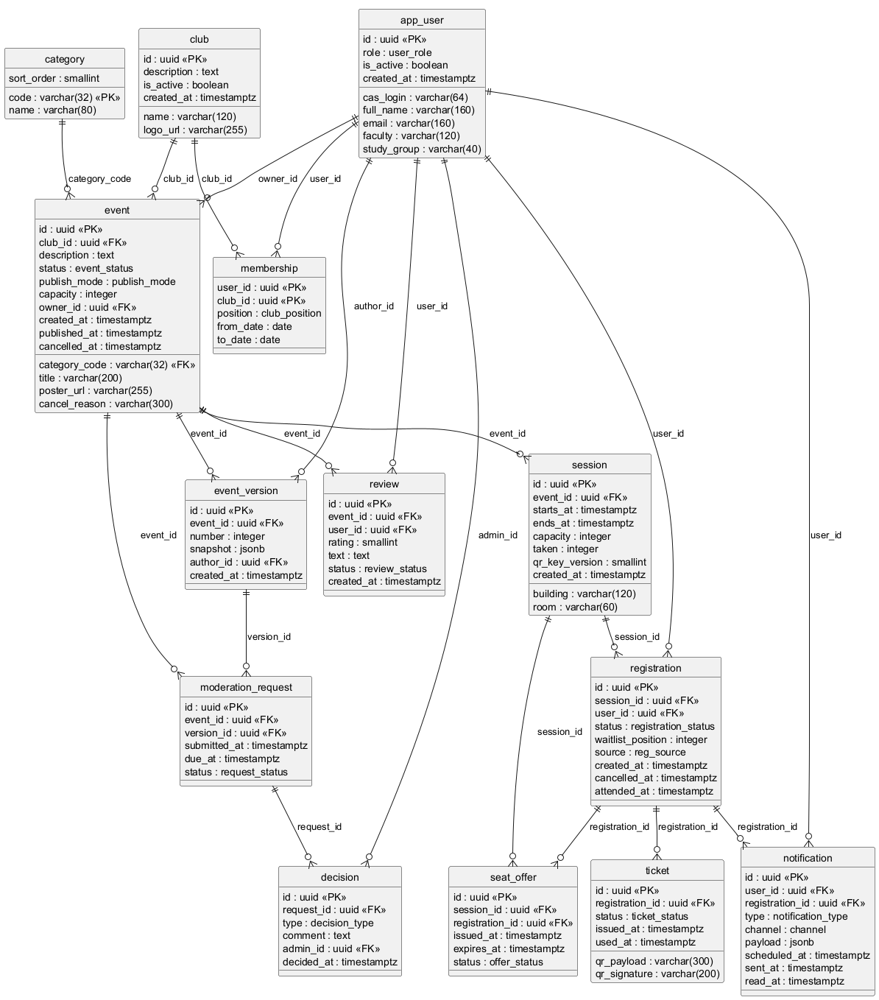

| Задание | Содержание | Артефакт | Исполнитель |
|---|---|---|---|
| 1 | Модель требований и реестр вариантов использования | docs/02-requirements.md | Zeng Yaoxin |
| 2 | Логическая и физическая модель БД, DDL, демонстрационные данные | db/schema.sql, seed.sql, verify.sql | Zeng Yaoxin |
| 3 | Маршруты и конечные точки, коды ошибок, идемпотентность | docs/06-api.md | Zeng Yaoxin |
| 4 | Спецификация OpenAPI и Mock-сервер | api/openapi.yaml | Zeng Yaoxin |
| 5 | MCP-сервер для AI-ассистента (дополнительно) | mcp/server.py | Zeng Yaoxin |
| Док. | README, wiki (7 страниц), GitHub Pages, презентация | docs/, index.html | Zeng Yaoxin |
Работа индивидуальная: разделения ролей внутри команды нет, весь объём заданий 1–5 закрыт одним исполнителем.
Веб-приложение, мобильное приложение, киоск на входе — обращаются к одному REST-контракту
29 операций, 28 схем, bearer JWT, машиночитаемые коды ошибок
14 таблиц, 13 перечислений, 3 триггера-инварианта; DDL, данные и словарь полей генерируются из одной модели
MCP-сервер читает ту же базу и повторяет бизнес-правила, поэтому AI-ассистент не может обойти ограничения, зашитые в СУБД.

Скрипт проверки — db/verify.sql — воспроизводим: поднимается одна команда docker compose up.
| Практика | Как реализовано |
|---|---|
| Ветки и коммиты | Одна ветка main, 7 осмысленных коммитов: каждый закрывает одно задание и содержит проверяемый артефакт. |
| GitHub Projects | Доска с колонками To do → In progress → To check → Done, шесть задач по числу заданий и документации. |
| Issues | Каждая задача оформлена отдельным issue с критериями приёмки; закрывается только после перехода через To check. |
| Wiki | Семь страниц: главная, требования, схема файлов, дополнительная спецификация, база данных, API, презентация. |
| GitHub Pages | Статический сайт с той же структурой, что и wiki; страницы API и БД рендерятся из спецификации и модели. |
Ни одно утверждение в отчёте не проверяется вручную: у каждого числа есть команда, которая его воспроизводит.